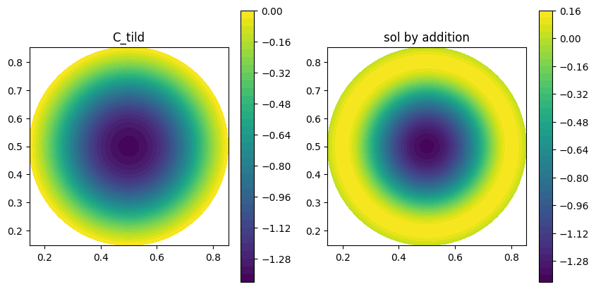
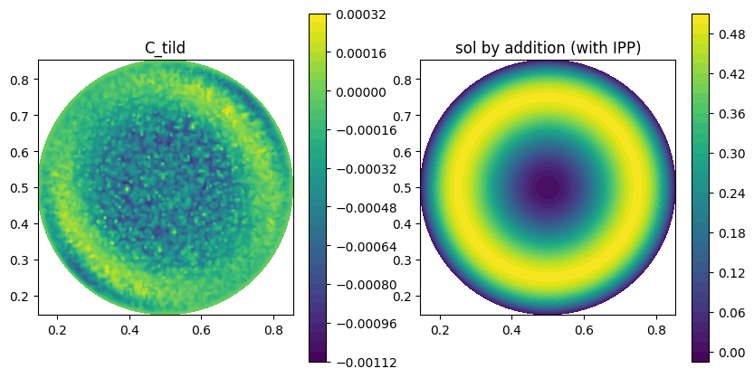
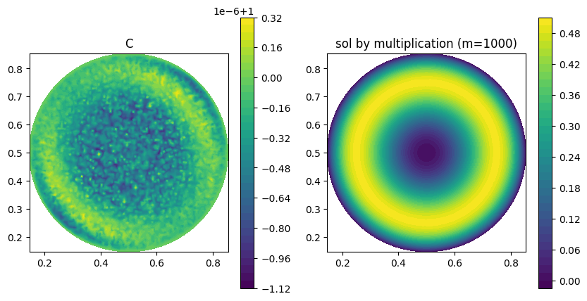

Correction on \(\phi\)-FEM solution
In this section, we will consider the case of the circle with the solution defined in [_first_problem] with \(S=0.5\), \(f=1\) and \(\varphi=0\) (homogeneous case) and \(n_{vert}=100\).
The aim here is to test the different types of correction presented above on a perturbed solution whose perturbation is not analytically known. We therefore choose to consider
with \(u_{\phi-FEM}\) the solution \(\mathbb{P}_2\) obtained by solving the problem with the \(\phi\)-FEM method.
We obtain
In the following, we will test the different types of correction using the standard FEM method.
Correction by adding :
We begin by testing the addition correction with standard FEM without integration by parts (Figure 2), then with integration by parts on the term with \(\Delta\tilde{\phi}\) (Figure 3).

Figure 2. Correction of \(u_{\phi-FEM}\) by adding with FEM.
|

Figure 3. Correction of \(u_{\phi-FEM}\) by adding (with IPP) with FEM.
|
We obtain
with \(u_{add}\) the solution obtain with the correction by adding and \(u_{add2}\) the solution obtained with the correction by adding with integration by parts.
It would therefore seem that correction without integration by parts does not provide the right results at all. This is why, as a first step, we’re going to calculate the first derivatives of the solution with FEniCS, according to x and y (Figure 4).
It would appear that there are some errors at the boundary of the domain, but they are fairly close to the exact derivatives. Let’s now calculate the second derivatives of the solution with FEniCS, according to x and y (Figure 5).
It seems that the second derivatives are very far from the exact second derivatives, which explains why addition without integration by parts, which uses these second derivatives, doesn’t work at all.
Correction by multiplying :
We will now test the correction by multiplying with standard FEM (Figure 6) and the correction by multiplying on a elevated problem by taking \(m=1000\) (Figure 7).

Figure 6. Correction of \(u_{\phi-FEM}\) by multiplying with FEM.
|

Figure 7. Correction of \(u_{\phi-FEM}\) by multiplying on an elevated problem with FEM (m=1000).
|
We obtain
with \(u_{mult}\) the solution obtain with the correction by multiplying and \(u_{mult,m}\) the solution obtained with the correction by multiplying on an elevated problem.
|
Note that the same error is obtained for correction by multiplying on an elevated problem and correction by addition with integration by parts. |